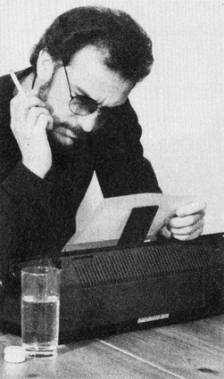

Scorpio Interactive
Eine neue Art von Computer-Entertainment, von Unterhaltung mit dem Computer, rückt in greifbare Nähe: »Scorpio Interactive« wurde vor kurzem in London vorgeführt.
in dunkler, abgesperrter Raum am Rande der Londoner PCW-Show. Einige Menschen scharen sich um mehrere technische Geräte: Ein MSX-Computer, ein Videorecorder und ein Monitor. Auf dem Monitor ist das bekannte Video »Another Brick in the Wall« von Pink Floyd zu sehen. Das Videobild wird von einem Computer-Spiel überlagert, das stark dem Klassiker »Break Out« ähnelt. Kurz daraufwechselt dasBild. Zuden Klängen und Bildern von Dire Straits »Money for Nothing« gilt es, die Laufschrift mit dem Text synchron zum Song zu halten. Einige weitere Videos folgen. Zum Schluß tritt Phil Collins mit »You can't hurry Love« auf. Der Spieler muß mit seiner Spielfigur die Bewegungen seiner Mit-Tänzer nachahmen.
Dieses erste, interaktive Musikvideo namens »See me, Hear me, Touch me«« ist der Prototyp einer völlig neuen Form von Computer-Unterhaltung. Dies meint zumindest Mel Croucher, Vater des Unternehmens, das den Namen »Scorpio Interactive« trägt.

Mel führte das erste Demo auf der PCW-Show in London hinter verschlossenen Türen vor. Eine öffentliche Vorführung war aus rechtlichen Gründen unmöglich, da Scorpio Interactive nicht die Aufführungsrechte an den Videos besaß. Deswegen können wir auch keine Bildschirmfotos der Spiele zeigen.
Auf die Frage, was er mit Scorpio Interactive bezwecke, sagt Mel Croucher: »Die typischen Computerspiele sind ein Mißbrauch der Computer. Ein Computer ist eine wundervolle Maschine mit vielen Möglichkeiten. Und für was verwenden ihn die Menschen: Um Gewalt und Mord zu simulieren. Dafür gibt es doch keinen ersichtlichen Grund.
Mit Scorpio Interactive können wir einige Barrieren der Unterhaltungsbranche niederreißen und einige Gebiete miteinander verbinden: Bild von einem Videoband, HiFi-Stereo-Ton, Musik und die Möglichkeit, dort steuernd einzugreifen und mit diesen Elementen zu spielen.
Scorpio wird später auch von anderen benutzt werden, um Gewalt und Pornographie zu verbreiten. Das war bisher mit jedem Medium so. Doch das ist nicht mein Geschäft. Ich will mit Scorpio Emotionen hervorrufen, Leute zum berechtigten Lachen und Weinen bringen. Meine Wunschvorstellung ist wirklich, den Spieler in die Handlung eines Films zu versetzen. Jedesmalwenner denFilm spielt, passieren neue Dinge.«
Daraufhin angesprochen, daß es ähnliche Spiele ja schon in den Spielhallen gäbe, die mit Laser-Disks arbeiten, sagt Mel: »Ja, technisch gibt es so was schon. Aber augenblicklich werden diese Systeme wieder nur zur Verkörperung von Gewalt eingesetzt. Ich würde gerne mal einige solche Spiele sehen, die sich um Emotionen drehen, um Liebe und Freundschaft. Ich stelle mir beispielsweise »Casablanca« als Spiel vor, bei dem der Spieler oder die Spielerin aktiv eine der Hauptrollen übernimmt. Da kann der Schluß ja ganz anders sein. Warum sollen sich Bogart und Bergmann am Ende nicht kriegen, wenn der Spieler es so will?
Aber das ist schon ein sehr hochgestecktes Projekt. Das erste fertige Scorpio-Produkt wird mit Sicherheit etwas Ähnliches wie die heutige Demonstration sein: Video-Clips gekoppelt mit einfachen Spielen.«
Über Liefertermine und einen Preis für das fertige System will Mel noch nicht reden: »Bis jetzt ist die Hardware noch nicht fertig. Deswegen weiß ich auch noch nicht, wann das System auf den Markt kommt: in sechs Monaten oder in zwei Jahren? Auch beim Preis will ich mich nicht festlegen. Wenn ich heute sage, es wird soundsoviel kosten, dann wird man mich später darauf festnageln und das will ich nicht. Ich werde auch noch nicht sagen, mit welchen Künstlern ich arbeite. Ich habe mit vielen britischen Pop-Musikern geredet und einige sehr bekannte haben mir schon die Zusammenarbeit versprochen.«
Bis wir die ersten Scorpio Interactive-Produkte für den C 64 sehen, werden wohl noch einige Monate ins Land gehen. Ob uns dann wirklich die angedeutete Revolution auf dem Unterhaltungssektor überfällt, müssen wir abwarten.
(bs)Info: Scorpio Interactive, Mel Croucher Ltd., 29 Great Southsea Street, Portsmouth, Hants. PO5 3BY, England